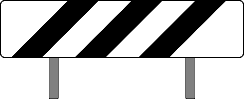

(1)
Bedeutung
Ein Haltepunkt ist zu erwarten.
›
(2)
Beschreibung
Eine schräg zum Gleis gestellte waagerechte weiße Tafel mit drei schwarzen Schrägstreifen.

›
(3)
Allgemeiner Hinweis
Das Signal kündigt Haltepunkte oder Haltestellen an, die infolge der örtlichen Verhältnisse schwer zu erkennen sind.
›
(4)
Aufstellung
Das Signal steht:
- auf Hauptbahnen im Abstand des Bremsweges der Strecke
- auf Nebenbahnen 150m
vor dem Bahnsteig.
›
(5)
Rückstrahlend
Das Signal ist rückstrahlend. Es darf vorübergehend nicht rückstrahlend sein.
›